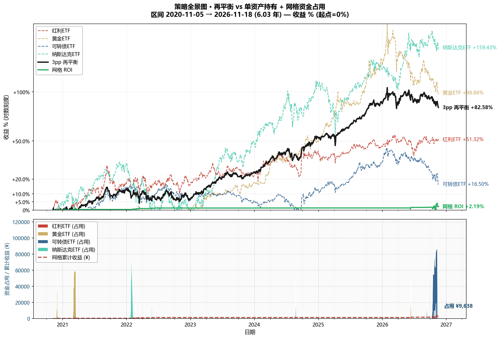

① 策略全景图
上：各资产买入持有收益（虚线）· 3pp 再平衡（黑色粗线）· 网格 ROI（绿线），收益 % 对数刻度
下：网格资金占用堆叠（各资产 持仓数量 × 收盘价）· 网格累计收益（红色虚线）

② 交易记录
网格策略成交明细（开仓 / 加仓 / 止盈），按时间倒序
③ 持仓
再平衡组合与网格组合各自独立管理现金与持仓，互不影响
4 资产等权 · 3pp 再平衡 · 复合网格 · 持仓隔离 · DDD 架构
上：各资产买入持有收益（虚线）· 3pp 再平衡（黑色粗线）· 网格 ROI（绿线），收益 % 对数刻度
下：网格资金占用堆叠（各资产 持仓数量 × 收盘价）· 网格累计收益（红色虚线）

网格策略成交明细（开仓 / 加仓 / 止盈），按时间倒序
再平衡组合与网格组合各自独立管理现金与持仓，互不影响